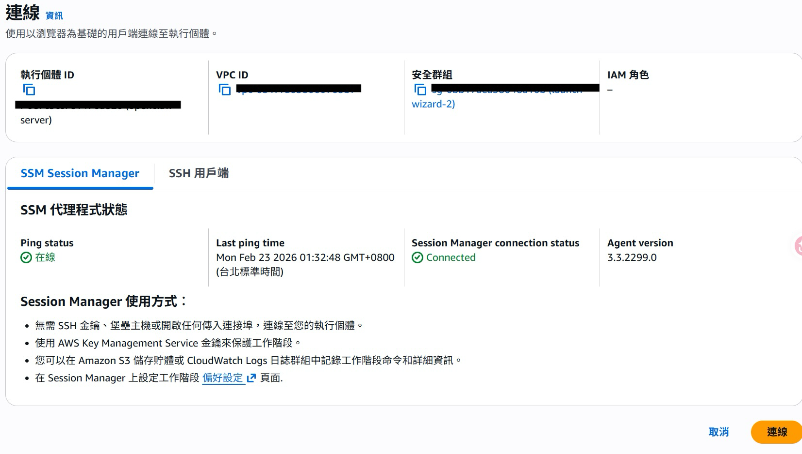
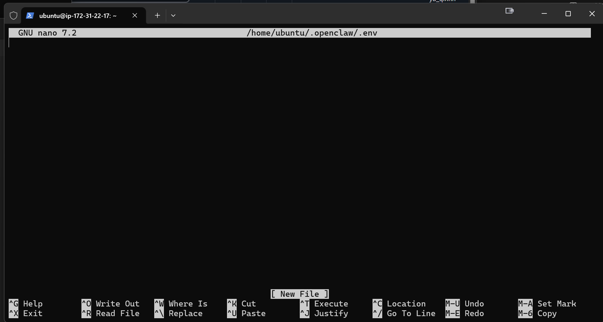
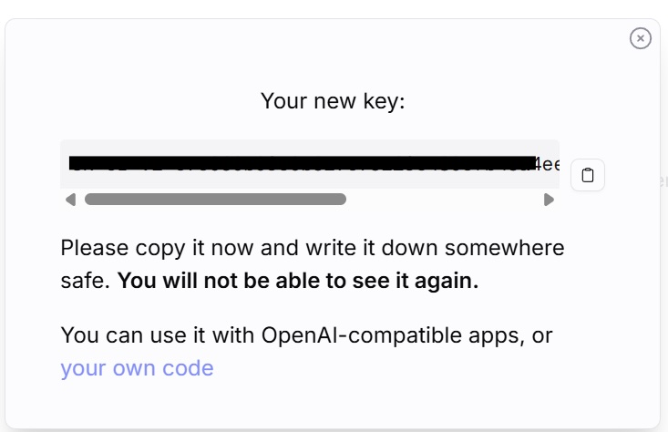
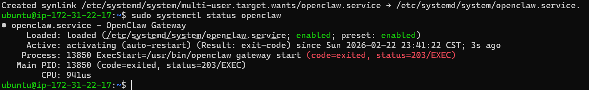
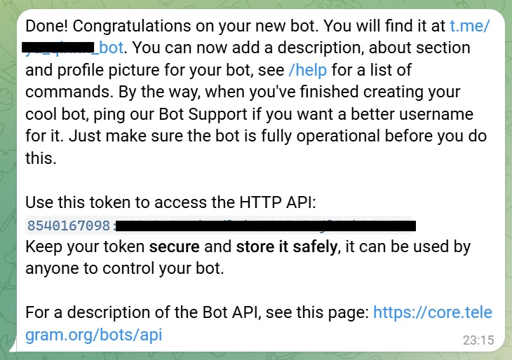
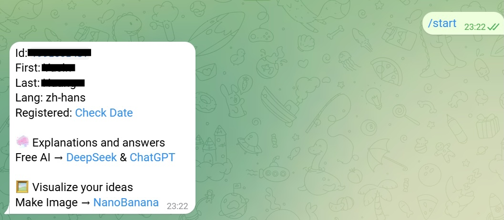

by Dr. Victor Chen · 給完全不懂雲端的版本
簡單說：
- EC2 像「自己租一間套房，家具自己決定」
- Lightsail 像「拎包入住的小套裝」
- ECS Fargate 像「進階商辦管理方案」
本指南整合了實戰經驗與 Dr Jackei Wong 的 OpenClaw 新手教學影片（10 分鐘完成安裝 + Discord Bot 設定，含 AWS + OpenRouter 部署示範）。
AWS Console 有中文介面，但翻譯很不直覺。以下是本指南會用到的英中對照：
| 英文（預設介面） | 中文介面顯示 | 白話 |
|---|---|---|
| Instances | 執行個體 | 你租的電腦 |
| Launch instances | 啟動執行個體 | 開一台新電腦 |
| Key pair | 金鑰對 | SSH 登入鑰匙 |
| Security Group | 安全群組 | 防火牆 / 門禁 |
| Inbound rules | 傳入規則 | 「誰可以連進來」的規則 |
| Volumes | 磁碟區 | 硬碟 |
| Elastic IP | 彈性 IP 地址 | 固定不變的 IP |
| Billing | 帳單 | 費用管理 |
| Budgets | 預算 | 花費上限警報 |
| Network settings | 網路設定 | 防火牆設定 |
| Configure storage | 設定儲存 | 硬碟大小設定 |
| Lifecycle Manager | 生命週期管理員 | 自動備份排程 |
💡 切換語言：AWS Console 左下角可以切中文/英文。如果找不到某個功能，切回英文比較容易對照教學。
AWS（Amazon Web Services）：亞馬遜雲端服務。白話是「網路上的電腦租借平台」。雲端部署：把程式放在網路上的主機運行，不放在你自己筆電。白話像「把店開在商場，不開在自家客廳」。EC2：AWS 的虛擬主機。白話是「可遠端登入的一台租用電腦」。Security Group：安全群組。白話像「門禁系統」，決定哪個門（埠）可被誰打開。SSH：遠端登入協定。白話像「遠距門禁卡 + 對講機」。systemd：Linux 服務管理員。白話像「值班總機」，確保服務開機自動啟動、掛掉自動拉起。Nginx：網頁伺服器 / 反向代理工具。白話像「大樓總櫃台」，外面的人先到櫃台，再轉接到裡面服務。OpenRouter：多種AI 模型的統一入口。像「餐廳的線上訂餐平台」——你不用直接跟每家餐廳（OpenAI、Anthropic、Google）分別開帳號，透過 OpenRouter 一個帳號就能點不同家的菜。API Key：程式用來證明「我有付錢」的密碼。像餐廳的儲值卡號，沒帶就不能點餐。Dashboard：OpenClaw 的管理介面。像汽車的儀表板，讓你看到系統狀態、調整設定。| 方案 | 優點 | 缺點 | 適合情境 |
|---|---|---|---|
| EC2 | 完整控制、最通用、教學最多 | 要自己維運 | 多數 OpenClaw 生產/測試 |
| Lightsail | 操作簡單、通常較便宜 | 彈性較低 | 個人 PoC（概念驗證） |
| ECS Fargate | 免管主機、易擴展 | 初期學習曲線較陡 | 團隊化、多容器 |
t3.small / t4g.small + Ubuntu 22.04它像一台「夠用的通勤車」： - 不豪華，但可穩定上路 - 成本相對可控 - 出問題時網路上有大量可參考教學
這段用「每一步做什麼 + 為什麼做 + 指令在幹嘛」方式寫。
以下假設你剛註冊完 AWS 帳號，第一次登入 Console，完全不知道要點什麼。
my-openclaw）白話：這步就是「辦會員卡」。信用卡是押金驗證用，還沒開始花錢。
⚠️ 重要：註冊完立刻做兩件事 - 開啟 MFA（多因素驗證）：登入後到右上角帳號名 → Security credentials → 啟用 MFA。這是防止帳號被盜的基本功，像在門鎖外面再加一道指紋辨識。 - 設定帳單警報：到 Billing（中文：「帳單」）→ Budgets（中文：「預算」）→ Create budget（建立預算）→ 設一個月 $10 美金的上限警報。超過會寄 email 通知你。
EC2 → 點搜尋結果的 EC2白話：AWS 有兩百多個服務，你只需要找到 EC2 就好。搜尋欄是你的好朋友。
在 Console 右上角（帳號名稱旁邊）有一個地區選擇器，像 N. Virginia 或 Tokyo。
點它 → 選 Asia Pacific (Taipei) / 亞太地區（台北）
這是 AWS 在台灣本地的機房（代碼 ap-east-2），延遲最低。
💡 如果選台北後發現某些功能不可用（台北區較新，少數服務可能還沒開放），改選 Asia Pacific (Tokyo)（亞太地區 東京，
ap-northeast-1）作為備案，也很近。
為什麼區域很重要？ - 離台灣越近，延遲越低（打字到回覆的等待時間越短） - 每個區域是獨立的 — 在台北建的機器，切到東京就看不到了。所以記住你選了哪個！
白話：這就像選「把電腦放在哪個機房」，選離你近的那間。
Name（名稱）：
- 隨意取，像 openclaw-server
- 白話：幫這台電腦取個名字，方便之後辨識
Application and OS Images（作業系統）：
- 預設是 Amazon Linux — 不要用這個
- 點 Ubuntu → 選 Ubuntu Server 22.04 LTS（Free tier eligible 那個）
- Architecture 選 64-bit (Arm) 如果你要用 t4g（較省錢），選 64-bit (x86) 如果用 t3
白話：選作業系統。Ubuntu 22.04 是最多教學支援的版本，出問題 Google 得到答案。
Instance type（機器規格）：
- 搜尋欄打 t3.small 或 t4g.small → 選它
- t4g.small 用 Arm 架構，每小時約 $0.017，比 t3.small（$0.021）便宜約 20%
- 如果只是測試，t3.micro（Free Tier 免費一年）也能跑，只是記憶體較小
白話：選電腦的 CPU 和記憶體大小。small 對 OpenClaw 來說夠用。
在同一個頁面往下滑，找到 Key pair (login)（中文：「金鑰對（登入）」）區塊：
新手推薦：直接選 "Proceed without a key pair"（不建立金鑰對）
因為我們後面會用 EC2 Instance Connect（在瀏覽器裡直接連線），完全不需要 pem 鑰匙檔。這是最簡單的方式。
📸 在 Key pair 下拉選單中選「Proceed without a key pair (Not recommended)」— 雖然它寫「不推薦」，但搭配 Instance Connect 是安全的
mv ~/Downloads/openclaw-key.pem ~/.ssh/
chmod 400 ~/.ssh/openclaw-key.pem
mkdir ~\.ssh -Force
mv ~\Downloads\openclaw-key.pem ~\.ssh\
icacls $HOME\.ssh\openclaw-key.pem /inheritance:r /grant:r "$($env:USERNAME):(R)"
同一頁面繼續往下，Network settings（中文：「網路設定」）區塊：
0.0.0.0/0 沒關係，因為 EC2 Instance Connect 需要）💡 如果之後要用 Dashboard，再回來加 port 規則就好（見 3.6 節）。
白話：先用最簡單的預設就好，能動再說。
Configure storage（中文：「設定儲存」）區塊： - 預設 8 GB，建議改成 20 GB（OpenClaw + 日誌 + 未來擴充） - 白話：硬碟大小。8GB 太小，跑一陣子可能滿。20GB 很充裕。
你會看到你的執行個體狀態從 Pending（待處理）變成 Running（執行中），通常 30 秒內。
54.238.xxx.xxx白話：這是你租來那台電腦的「門牌號碼」。
到這裡，你已經成功在 AWS 上開了一台 Ubuntu 電腦。接下來直接在瀏覽器裡連進去裝 OpenClaw。
AWS 提供了 EC2 Instance Connect — 直接在瀏覽器裡打開一個 Terminal，不需要下載鑰匙檔、不需要開本機 Terminal。這是最簡單的連線方式。
📸 建議截圖：Connect to instance 頁面，EC2 Instance Connect 分頁，橘色 Connect 按鈕

幾秒後，瀏覽器會開一個新視窗（或分頁），裡面就是你 EC2 的 Terminal！
你會看到畫面出現一個 $ 符號（命令提示字元）：
$
這就代表你已經連上了。看起來很陽春，但這就是 Linux 的命令列介面 — 在 $ 後面打指令按 Enter 就會執行。
💡 Instance Connect 開的是精簡版 shell，所以不會像教學影片那樣顯示
ubuntu@ip-xxx:~$的完整提示。只有一個$是正常的。
先確認你目前的身份：
whoami
→ 應該會顯示 ssm-user。記住這個身份，後面設定 systemd 時要用到。
→ 恭喜！你已經「走進」EC2 了。現在你在這裡打的每一行指令，都是在那台遠端電腦上執行。
白話：就像 Google Docs 不用裝 Word 就能在瀏覽器裡編輯文件一樣，Instance Connect 讓你不用裝任何東西就能操作遠端電腦。
連不上？常見原因：
| 情況 | 解法 |
|---|---|
| 按 Connect 後一直轉圈圈 | Security Group 的 SSH (port 22) 規則被改過 → 回去確認有 port 22 且 Source 是 0.0.0.0/0 |
| 顯示 "There was a problem connecting" | Instance 可能還在啟動中 → 等 1 分鐘重試 |
| 頁面完全空白 | 換一個瀏覽器試試（推薦 Chrome） |
連上後，在瀏覽器的 Terminal 裡依序輸入：
sudo apt update
→ 更新套件清單。你會看到一堆 Hit / Get 的輸出，正常。
sudo apt -y upgrade
→ 把所有已安裝的軟體更新到最新版。 → 這步可能要跑 1-3 分鐘，耐心等。如果中間跳出紫色畫面問你要不要重啟服務，直接按 Enter（選預設值）就好。
sudo timedatectl set-timezone Asia/Taipei
→ 把時區設成台北。不設的話預設 UTC（比台灣慢 8 小時），之後看日誌會很混亂。
驗證時區是否設對：
date
→ 應該顯示台北時間，例如 Sun Feb 23 10:30:00 CST 2026
ssh -i ~/.ssh/openclaw-key.pem ubuntu@<EC2_PUBLIC_IP>
ssh -i $HOME\.ssh\openclaw-key.pem ubuntu@<EC2_PUBLIC_IP>
確認你現在是在 EC2 裡面（瀏覽器 Terminal 有
$提示字元），以下所有指令都在 EC2 上執行。
curl -fsSL https://openclaw.ai/install.sh | bash
就這一行。它會自動安裝 Node.js、npm、OpenClaw。
跑完後驗證：
openclaw --version
→ 看到版本號就是成功了！
⚠️ 安裝過程中看到
CC(target)、note:、WARN等輸出都是正常的（在編譯原生模組），耐心等 5-15 分鐘。 如果遇到問題（command not found、安裝失敗等），見第 6 節「常見問題排錯」有完整解法。
這步是把「AI 模型的密碼」和「通訊平台的密碼」寫進一個設定檔，讓 OpenClaw 知道該連哪個 AI、該跟誰對話。
mkdir -p ~/.openclaw
→ 建立一個叫 .openclaw 的資料夾。前面的 . 表示隱藏資料夾（Linux 慣例，放設定用）。
→ -p 表示「如果已經存在就跳過，不要報錯」。
nano ~/.openclaw/.env
你會看到畫面變成一個空白的文字編輯器，底部有一排快捷鍵提示（^G Get Help ^O Write Out 等等）。
📸 建議截圖：nano 編輯器的空白畫面，注意底部的快捷鍵列

nano 超簡單操作指南： - 直接打字就能輸入內容（跟記事本一樣） - 方向鍵移動游標 - 儲存：按Ctrl + O→ 按Enter確認檔名 - 離開：按Ctrl + X- 底部的^就是Ctrl鍵的意思
在 nano 裡面輸入以下內容（先跟著打，Token 怎麼拿後面會教）：
Telegram 版（推薦，最簡單）：
OPENCLAW_TELEGRAM_BOT_TOKEN=你的Bot密碼放這裡
OPENCLAW_ALLOWED_CHAT_ID=你的ChatID放這裡
TZ=Asia/Taipei
Discord 版：
OPENCLAW_DISCORD_BOT_TOKEN=你的Bot密碼放這裡
OPENCLAW_DISCORD_CHANNEL_IDS=頻道ID放這裡
TZ=Asia/Taipei
每個欄位是什麼意思：
| 欄位 | 白話 | 哪裡拿 |
|---|---|---|
OPENCLAW_TELEGRAM_BOT_TOKEN |
Telegram 機器人的「身份密碼」 | 3.7 節會教你從 @BotFather 拿 |
OPENCLAW_ALLOWED_CHAT_ID |
「只有這個人可以跟機器人對話」的 ID | 3.7 節會教你查 |
OPENCLAW_DISCORD_BOT_TOKEN |
Discord 機器人的密碼 | 3.7 節會教 |
OPENCLAW_DISCORD_CHANNEL_IDS |
機器人可以活動的頻道 | 3.7 節會教 |
TZ |
時區 | 台灣就填 Asia/Taipei |
輸入完後：按 Ctrl + O → Enter（儲存） → Ctrl + X（離開 nano）。
.env 裡面全是密碼等級的資訊 — 絕對不要貼到任何公開的地方（GitHub、論壇、群組）💡 不確定 Token 怎麼拿？ 可以先跳到 3.7 節設定通訊平台拿到 Token，再回來填。或者先留著空的，後面再用
nano ~/.openclaw/.env回來編輯。
OpenClaw 本身只是管家平台，它需要連接 AI 模型才能「思考」。最方便的方式是用 OpenRouter — 一個帳號就能用 Claude、GPT、Gemini 等各家模型。
📸 建議截圖：OpenRouter 首頁，指出右上角的 Sign In
openclaw-ec2）→ 點 Createsk-or-v1- 開頭的長字串 — 這就是你的 API Key白話：API Key 就是 AI 模型的「點餐密碼」，沒有這個密碼，OpenClaw 叫不動任何 AI。
📸 建議截圖：OpenRouter Keys 頁面，Create Key 按鈕和產生的 Key

為什麼一定要設上限？ - AI 每次對話都會扣錢（依模型不同，每次幾分到幾毛美金） - 如果你寫了一個會重複呼叫 AI 的迴圈，沒上限的話幾小時可能燒掉幾十美金 - $5 上限 = 安全網，燒完就自動停，不會爆帳單
白話：就像手機預付卡，先儲 $5，用完自動停。等你熟悉消耗速度後再加。
回到 EC2 的 Terminal（如果斷了就重新 SSH 連上），編輯 .env 檔：
nano ~/.openclaw/.env
在已有的內容下面加上一行：
OPENROUTER_API_KEY=sk-or-v1-你剛才複製的那串Key
整個 .env 現在看起來應該像：
OPENCLAW_TELEGRAM_BOT_TOKEN=123456:ABC-xxx
OPENCLAW_ALLOWED_CHAT_ID=1163817854
TZ=Asia/Taipei
OPENROUTER_API_KEY=sk-or-v1-abcdef123456...
按 Ctrl + O → Enter → Ctrl + X 儲存離開。
後面啟動 Dashboard（3.6 節）後可以在介面上選。常見選擇： - anthropic/claude-sonnet-4-20250514：性價比最高，推薦新手 - anthropic/claude-opus-4-6：最強但最貴 - google/gemini-2.5-flash：便宜，適合大量簡單任務
不確定就選 Sonnet，夠用又不會太燒錢。
OpenClaw 裝好了，接下來要啟動「Gateway」— 它是 OpenClaw 的核心服務，負責連接 AI 模型和通訊平台。
openclaw gateway run
成功的話你會看到：
[gateway] listening on ws://127.0.0.1:18789
→ Gateway 在跑了！確認沒問題後，按 Ctrl + C 停掉。接下來設定自動守護，讓它開機自動跑、掛掉自動重啟。
先找到 openclaw 的實際路徑：
which openclaw
→ 記下顯示的路徑（例如 /usr/local/bin/openclaw 或 /usr/bin/openclaw），等下要用。
sudo nano /etc/systemd/system/openclaw.service
貼上以下內容（把 User= 和路徑換成你的實際情況）：
[Unit]
Description=OpenClaw Gateway
After=network.target
[Service]
User=ssm-user
EnvironmentFile=/home/ssm-user/.openclaw/.env
ExecStart=/usr/local/bin/openclaw gateway run --allow-unconfigured
Restart=always
RestartSec=5
[Install]
WantedBy=multi-user.target
按 Ctrl + O → Enter（儲存） → Ctrl + X（離開）。
🔴 最容易踩的坑：User 和 HOME 必須對齊！
這裡用
ssm-user是因為本教學透過 EC2 Instance Connect 登入，登入身份就是ssm-user，你前面建的.openclaw/和.env都存在/home/ssm-user/下。systemd 的
User=決定了 Gateway 啟動時的HOME目錄，也就決定了它讀哪個~/.openclaw/。你之前用哪個身份設定
.env和執行openclaw onboard，這裡的User=就必須填那個身份。快速確認方法： ```bash
看你目前是誰
whoami
看 .openclaw 在哪個 HOME 下
ls /home/*/.openclaw/ 2>/dev/null ```
如果你是用 SSH 以
ubuntu身份登入並設定的，就改成User=ubuntu+EnvironmentFile=/home/ubuntu/.openclaw/.env。規則很簡單：
User=、EnvironmentFile=的路徑、和你當初設定 OpenClaw 時的身份，三者必須指向同一個 HOME。 搞錯的話，Gateway 會跑在一個「空白的平行世界」，所有 Telegram 設定、Token、對話記錄都看不到。💡 如何在 Terminal 裡貼上文字？ - macOS Terminal：
Cmd + V- Windows PowerShell：右鍵點一下 - Linux Terminal：Ctrl + Shift + V（注意多了 Shift）
| 設定 | 白話 |
|---|---|
Description=OpenClaw Gateway |
這個服務的名稱（顯示用） |
After=network.target |
等網路連上後才啟動（避免還沒連網就試圖運作） |
User=ssm-user |
用 ssm-user 身份來跑（⚠️ 必須跟你設定 .openclaw 時的登入身份一致） |
EnvironmentFile=... |
讀取你剛才填的 .env 密碼檔（⚠️ 路徑必須對應 User 的 HOME） |
ExecStart=... |
實際啟動 OpenClaw 的指令 |
Restart=always |
不管什麼原因掛掉，都自動重啟 |
RestartSec=5 |
掛掉後等 5 秒再重啟（避免瘋狂重啟） |
WantedBy=multi-user.target |
開機後自動啟動 |
白話：你雇了一位「24 小時值班警衛」，OpenClaw 倒了就扶起來，開機就自動上崗。
依序執行這三行：
sudo systemctl daemon-reload
→ 告訴系統「我新增了一個 service 設定檔，請重新讀取」。沒有輸出是正常的。
sudo systemctl enable --now openclaw
→ enable = 設定開機自動啟動，--now = 現在就立刻啟動。兩件事一行搞定。
sudo systemctl status openclaw
→ 查看 OpenClaw 目前狀態。
成功的話你會看到：
● openclaw.service - OpenClaw Gateway
Loaded: loaded (/etc/systemd/system/openclaw.service; enabled)
Active: active (running) since Sun 2026-02-23 10:30:00 CST
重點看兩個地方：
- enabled = 開機會自動啟動 ✓
- active (running) = 現在正在跑 ✓
如果看到 failed 或 inactive，往下看會有紅色錯誤訊息，常見原因：
- .env 裡 Token 沒填或格式錯 → 回 3.4 檢查
- ExecStart 路徑不對 → 執行 which openclaw 確認路徑
📸 建議截圖：
systemctl status openclaw顯示 active (running) 的成功畫面
| 指令 | 功能 |
|---|---|
sudo systemctl status openclaw |
查看狀態 |
sudo systemctl restart openclaw |
重啟（改設定後用） |
sudo systemctl stop openclaw |
停止 |
sudo systemctl start openclaw |
啟動 |
journalctl -u openclaw -n 50 |
看最近 50 行日誌 |
journalctl -u openclaw -f |
即時追蹤日誌（像直播，Ctrl+C 離開） |
OpenClaw 有一個網頁版管理後台，可以在瀏覽器裡看系統狀態、選 AI 模型、查對話記錄。但因為它跑在 EC2 上，你不能直接用瀏覽器打開，需要多一步「挖隧道」。
在 EC2 的 Terminal（Instance Connect 瀏覽器視窗）執行：
openclaw dashboard --no-open
→ --no-open 表示「只給我網址，不要嘗試打開瀏覽器」（因為 EC2 上沒有瀏覽器）。
你會看到類似這樣的輸出：
Dashboard: http://127.0.0.1:18789/#token=abc123xyz456...
把 token= 後面那串完整複製下來（後面要用）。
最簡單的做法是讓 Dashboard 對外可連，然後直接用 EC2 的公有 IP 打開。
2a. 修改 Security Group，開放 port 18789：
18789你的IP/32）2b. 讓 Dashboard 監聽外部連線：
回到 EC2 Terminal 執行：
openclaw dashboard --no-open --host 0.0.0.0
2c. 在你的瀏覽器打開 Dashboard：
http://<EC2_PUBLIC_IP>:18789/#token=abc123xyz456...
把 <EC2_PUBLIC_IP> 換成你的 EC2 公有 IP（在執行個體詳細資訊裡找），token 用 Step 1 的那串。
📸 建議截圖：OpenClaw Dashboard 的主畫面
你應該會看到 OpenClaw 的管理介面！在這裡你可以： - 查看即時對話：看 AI 跟你說了什麼 - 調整模型：切換用哪個 AI（Claude / GPT / Gemini） - 管理 Skills：啟用或關閉特定技能 - 看系統狀態：記憶體用量、運行時間等
ssh -i ~/.ssh/openclaw-key.pem -L 18789:localhost:18789 ubuntu@<EC2_PUBLIC_IP>
ssh -i $HOME\.ssh\openclaw-key.pem -L 18789:localhost:18789 ubuntu@<EC2_PUBLIC_IP>
http://127.0.0.1:18789/#token=abc123xyz456...
OpenClaw 需要一個「對話視窗」才能跟你互動。目前最主流的選擇是 Telegram 或 Discord。以下都是手把手、一步不跳的教學。
如果你還沒有 Telegram： - 手機：App Store / Google Play 搜尋「Telegram」下載 - 電腦：desktop.telegram.org 下載桌面版 - 用手機號碼註冊
@BotFather → 點進去 → 點 Start/newbot 然後送出My OpenClawbot 結尾） → 例如 my_openclaw_botUse this token to access the HTTP API:
123456789:ABCdefGHIjklMNOpqrSTUvwxYZ123456789:ABC... 整串）— 這就是你的 OPENCLAW_TELEGRAM_BOT_TOKEN📸 建議截圖：BotFather 回傳 Token 的對話畫面（Token 碼住）

⚠️ 這串 Token 等於機器人的密碼，不要給任何人看到。 如果不小心洩漏了，在 BotFather 輸入/revoke可以作廢舊 Token 換新的。
@userinfobot → 點進去 → 點 StartId: 1234567890OPENCLAW_ALLOWED_CHAT_ID白話：Chat ID 就是你在 Telegram 裡的「身份證號碼」。填這個是為了讓機器人只聽你的話，其他人傳訊息它會忽略。
📸 建議截圖：@userinfobot 回傳 Chat ID 的畫面

回到 EC2 Terminal，編輯 .env：
nano ~/.openclaw/.env
確認裡面有這兩行（把值換成你剛才拿到的）：
OPENCLAW_TELEGRAM_BOT_TOKEN=123456789:ABCdefGHIjklMNOpqrSTUvwxYZ
OPENCLAW_ALLOWED_CHAT_ID=1234567890
儲存後重啟 OpenClaw：
sudo systemctl restart openclaw
@my_openclaw_bot）第一次會看到這個訊息（正常！）：
OpenClaw: access not configured. Pairing code: ABCD1234
→ 這表示 Bot 已經連上了，但你還沒被授權使用。需要完成配對：
openclaw pairing approve telegram <PAIRING_CODE>
把 <PAIRING_CODE> 換成剛才 Telegram 顯示的配對碼，例如：
openclaw pairing approve telegram ABCD1234
→ 成功會顯示：Approved telegram sender <你的USER_ID>
完全沒反應（連 pairing code 都沒出現）？檢查清單：
- [ ] Token 有沒有複製完整（常見問題：前後多了空格）
- [ ] .env 儲存了（Ctrl+O → Enter → Ctrl+X）
- [ ] 重啟了 OpenClaw（sudo systemctl restart openclaw）
- [ ] Gateway 有在跑嗎？openclaw status 看看
- [ ] 看日誌找線索：journalctl -u openclaw -n 50
OpenClaw（隨意）→ 勾 Terms of Service → 點 Create📸 建議截圖：Discord Developer Portal 的 New Application 按鈕
📸 建議截圖：Bot 頁面的 Token 區域 + 三個 Intent 開關
⚠️ Message Content Intent 如果沒開，Bot 只能看到斜線指令（/command），看不到一般訊息內容。
botOpenClaw 上線了（可能顯示為離線，正常的，因為 EC2 端還沒連上）📸 建議截圖：OAuth2 URL Generator 勾選 bot scope 和權限的畫面
OPENCLAW_DISCORD_CHANNEL_IDS白話：開啟開發者模式後，右鍵任何東西都能複製它的 ID。頻道 ID 就是告訴 Bot「你只能在這個房間說話」。
📸 建議截圖：Discord 右鍵選單顯示「複製 ID」的畫面
nano ~/.openclaw/.env
加上（或改成）：
OPENCLAW_DISCORD_BOT_TOKEN=你的Bot-Token
OPENCLAW_DISCORD_CHANNEL_IDS=你的頻道ID
如果有多個頻道，用逗號隔開：
OPENCLAW_DISCORD_CHANNEL_IDS=123456789,987654321
儲存後重啟：
sudo systemctl restart openclaw
hello）沒回覆？檢查清單：
- [ ] Bot Token 正確且完整
- [ ] Message Content Intent 已開啟
- [ ] Bot 已被邀請進 Server
- [ ] Channel ID 正確（右鍵 → 複製 ID）
- [ ] 已重啟 OpenClaw
- [ ] 看日誌：journalctl -u openclaw -n 50
| Telegram | Discord | |
|---|---|---|
| 設定難度 | ⭐ 簡單 | ⭐⭐⭐ 中等 |
| 適合情境 | 個人 1 對 1 使用 | 社群 / 多人互動 |
| 手機體驗 | 很好 | 還行 |
| 權限管控 | 基本（Chat ID） | 精細（角色/頻道） |
| 建議 | 第一次先用這個 | 等熟悉後再擴展 |
什麼時候需要這個？ 如果你想讓 Dashboard 可以從外面用網址直接打開（像
https://openclaw.example.com），而不用每次都開 SSH 隧道，就需要 Nginx。如果你只用 Telegram / Discord 跟 OpenClaw 對話，可以完全跳過這節。
白話：Nginx 就像大樓的「總櫃台」——外面的人先到櫃台，櫃台再把人帶到正確的辦公室。它可以幫你加 HTTPS（加密）、管理多個服務等等。
在 EC2 Terminal 執行：
sudo apt install -y nginx
→ 安裝完後 Nginx 會自動啟動。
驗證它在跑：
sudo systemctl status nginx
→ 看到 active (running) 就 OK。
sudo nano /etc/nginx/sites-available/openclaw
貼上以下內容（把 your-domain.com 換成你的網域，如果沒有網域可以先用 EC2 的 Public IP）：
server {
listen 80;
server_name your-domain.com; # 或直接填 EC2 Public IP
location / {
proxy_pass http://127.0.0.1:18789;
proxy_http_version 1.1;
proxy_set_header Upgrade $http_upgrade;
proxy_set_header Connection "upgrade";
proxy_set_header Host $host;
proxy_set_header X-Real-IP $remote_addr;
}
}
每行白話：
- listen 80：監聽 80 port（HTTP 的標準門）
- server_name：「這個設定是給哪個網域用的」
- proxy_pass：收到請求後，轉給 OpenClaw（跑在 18789 port）
- 其餘 proxy_set_header：確保 WebSocket（即時通訊）能正常運作
儲存離開（Ctrl+O → Enter → Ctrl+X）。
sudo ln -s /etc/nginx/sites-available/openclaw /etc/nginx/sites-enabled/
→ 建立一個「連結」，告訴 Nginx「這個設定要啟用」。
sudo nginx -t
→ 測試設定有沒有語法錯誤。看到 syntax is ok 和 test is successful 就好。
→ 如果出現紅色錯誤，通常是括號沒配對或分號忘記加，回去用 nano 檢查。
sudo systemctl reload nginx
→ 讓 Nginx 重新載入設定（不需要重啟整個服務）。
回到 AWS Console → EC2 → 你的執行個體 → Security（安全）tab → 點 Security Group（安全群組）連結 → Edit inbound rules（編輯傳入規則）：
- Add rule → Type: HTTP → Source: Anywhere-IPv4（0.0.0.0/0）
- 點 Save rules
現在你可以在瀏覽器直接輸入 http://<EC2_PUBLIC_IP> 打開 Dashboard（記得加上 token 參數）。
sudo apt install -y certbot python3-certbot-nginx
sudo certbot --nginx -d your-domain.com
→ Certbot 會自動幫你申請免費的 Let's Encrypt SSL 憑證，並修改 Nginx 設定。
→ 按照提示輸入 email、同意條款就好。
→ 完成後就可以用 https://your-domain.com 安全連線了。
⚠️ 這步需要有自己的網域名稱，而且 DNS 已指向 EC2 IP。如果你沒有網域，可以先用 HTTP。
快速檢查（常用）：
sudo systemctl status openclaw
→ 看到 active (running) = 正常。看到 failed 或 inactive = 出事了。
看日誌（出事時用）：
journalctl -u openclaw -n 50
→ 顯示最近 50 行日誌。-n 50 的數字可以改，-n 200 看更多。
→ 白話：像行車紀錄器回放，看剛剛發生什麼事。
即時追蹤（Debug 用）：
journalctl -u openclaw -f
→ 即時顯示新日誌（像直播）。按 Ctrl + C 停止。
→ 用途：你在 Telegram 發一條訊息，同時看這裡的日誌反應，就能知道問題出在哪。
進階：AWS CloudWatch（可選）
如果你想要「不用登入就知道有沒有出事」，可以設定 AWS CloudWatch 監控： 1. AWS Console → CloudWatch → Alarms → Create alarm 2. 選 EC2 → 你的 instance → CPU Utilization 3. 設定：當 CPU > 90% 持續 5 分鐘 → 寄 email 通知你
白話：像請一個護士定期量血壓，異常就打電話給你。
什麼要備份？
| 資料 | 路徑 | 重要性 |
|---|---|---|
| OpenClaw 設定 + 記憶 | ~/.openclaw/ |
⚠️ 最重要（Token、記憶、workspace 都在這） |
| systemd 設定 | /etc/systemd/system/openclaw.service |
不備份也能重建，但備份省時間 |
最簡單的備份方式：手動打包下載
在 EC2 上執行：
tar czf ~/openclaw-backup-$(date +%Y%m%d).tar.gz ~/.openclaw/
→ 把整個 .openclaw 資料夾打包成一個壓縮檔，檔名帶日期。
把備份檔下載到你的電腦（在你自己的 Terminal / PowerShell 執行，不是 EC2）：
macOS / Linux：
scp -i ~/.ssh/openclaw-key.pem ssm-user@<EC2_IP>:~/openclaw-backup-*.tar.gz ~/Desktop/
Windows（PowerShell）：
scp -i $HOME\.ssh\openclaw-key.pem ssm-user@<EC2_IP>:~/openclaw-backup-*.tar.gz $HOME\Desktop\
💡
scp的ssm-user@要換成你 EC2 上的實際登入身份。如果是用 SSH 以ubuntu登入就用ubuntu@。
→ scp = 安全複製，把 EC2 上的檔案下載到你桌面。
進階：AWS 自動快照（推薦）
白話：每天自動幫你的 EC2「拍照存檔」，壞掉的時候可以用照片還原到任意一天。
sudo npm i -g openclaw@latest
→ 把 OpenClaw 更新到最新版本。看到 added X packages 就是成功。
sudo systemctl restart openclaw
→ 重啟讓新版本生效。
openclaw --version
→ 確認版本號已更新。
sudo npm i -g openclaw@舊版本號出問題很正常。以下是最常見的狀況和解法，按照「你會遇到的順序」排列。
症狀： 打 ssh 指令後一直轉圈圈，最後顯示 Connection timed out 或 Permission denied。
排錯步驟（依序檢查）：
1️⃣ IP 打對了嗎？ → 回 AWS Console → EC2 → 執行個體 → 確認公有 IPv4 地址 → EC2 每次 Stop 再 Start，IP 可能會變！
2️⃣ Security Group 有開 port 22 嗎？
→ AWS Console → EC2 → 你的執行個體 → 安全（Security）tab → 看傳入規則（Inbound rules）
→ 應該要有一條：Type SSH，Port 22，Source 是你的 IP
3️⃣ pem 檔權限太寬鬆？
chmod 400 ~/.ssh/openclaw-key.pem
→ SSH 要求私鑰檔只有你能讀。如果權限太開放（例如 644），SSH 會拒絕使用它。
→ 錯誤訊息通常是 WARNING: UNPROTECTED PRIVATE KEY FILE!
4️⃣ pem 檔路徑對嗎？
ls -la ~/.ssh/openclaw-key.pem
→ 如果顯示 No such file or directory，表示檔案不在那。用 find ~ -name "*.pem" 搜尋一下。
5️⃣ 你的 IP 變了？（常見於手機分享網路或咖啡廳 WiFi） → 到 whatismyip.com 查你目前的 IP → 回 Security Group 更新 SSH 規則的 Source IP
症狀： systemctl status openclaw 顯示 failed 或 inactive。
排錯步驟：
1️⃣ 先手動跑，直接看錯誤訊息（最有效）：
openclaw gateway run
→ 不透過 systemd，直接在前台啟動。錯誤會直接顯示，比看日誌更直覺。
2️⃣ 看 systemd 日誌：
journalctl -u openclaw -n 100 --no-pager
3️⃣ 常見錯誤和解法：
| 日誌中的關鍵字 | 原因 | 解法 |
|---|---|---|
status=203/EXEC |
找不到 openclaw 執行檔 | which openclaw 確認路徑，修改 service 的 ExecStart |
ECONNREFUSED 127.0.0.1:18789 |
Gateway 沒在跑 | 先手動 openclaw gateway run 確認能啟動 |
ENOENT .env |
找不到 .env 檔 | 確認 ~/.openclaw/.env 存在 |
Invalid token |
Bot Token 格式錯 | 回 nano 檢查有沒有多餘空格或換行 |
OPENROUTER_API_KEY 相關 |
API Key 沒設或錯 | 回 3.4b 重新設定 |
EACCES |
權限不足 | 執行 chown -R ssm-user:ssm-user ~/.openclaw（把 ssm-user 換成你的登入身份） |
Cannot find module |
安裝不完整 | 重跑 sudo npm i -g openclaw@latest |
症狀： 在 Telegram / Discord 傳訊息給 Bot，沒有任何回應。
排錯步驟：
1️⃣ OpenClaw 本身有在跑嗎？
sudo systemctl status openclaw
→ 不是 active (running) 的話，先解決 6.2 的問題。
2️⃣ 看日誌有沒有收到訊息：
journalctl -u openclaw -f
→ 開著這個，然後去 Telegram 發訊息 → 如果日誌完全沒反應 → Token 錯了，Bot 根本沒連上 → 如果日誌有顯示收到但出錯 → 看錯誤訊息
3️⃣ Telegram 專屬檢查：
- 你有沒有在 Bot 對話裡點過 Start？（沒點 Start，Bot 不會理你）
- Chat ID 對嗎？（用 @userinfobot 重新確認）
- Token 完整嗎？（常見問題：只複製了一半）
4️⃣ Discord 專屬檢查： - Message Content Intent 開了嗎？（6.2 最常漏掉的一步） - Bot 在 Server 裡嗎？（看成員列表有沒有它） - Channel ID 對嗎？（右鍵 → 複製 ID 重新確認）
5️⃣ OpenRouter 額度用完了？ → 到 openrouter.ai/credits 看餘額 → $0 的話 AI 無法回覆。加值後就好了。
症狀： 日誌時間或排程時間跟台灣時間差 8 小時。
timedatectl
→ 看 Time zone 那行。如果是 UTC 就是沒設。
sudo timedatectl set-timezone Asia/Taipei
→ 設好後重啟 OpenClaw：sudo systemctl restart openclaw
症狀： 各種奇怪錯誤，或者新檔案寫不進去。
df -h
→ 看 / 那行的 Use%。超過 90% 就要處理。
清理方法：
# 清理舊日誌（只保留最近 3 天）
sudo journalctl --vacuum-time=3d
# 看哪個資料夾最大
du -sh /* 2>/dev/null | sort -rh | head -10
如果 20GB 不夠用，可以在 AWS Console 擴充硬碟（EC2 → Volumes / 磁碟區 → Modify Volume / 修改磁碟區 → 改大小）。
以下是實際在 AWS EC2 上安裝 OpenClaw 時最常遇到的問題，依發生頻率排列：
openclaw: command not found（最常見）可能原因 1：npm 全域路徑不在 PATH 裡（Instance Connect / SSM 環境特別容易發生）
# 找到 openclaw 實際裝在哪
find / -name "openclaw" -type f 2>/dev/null
# 建軟連結到系統路徑
sudo ln -sf $(npm prefix -g)/bin/openclaw /usr/local/bin/openclaw
💡 為什麼 Instance Connect / SSM 特別容易中招？ 因為它開的是
/bin/sh（不是 bash），不會讀~/.bashrc或~/.profile。在這些檔案裡加export PATH=...完全沒用。唯一可靠的做法就是把執行檔放到/usr/local/bin/。
可能原因 2：裝到了 npm 上的假套件
npm registry 上有一個佔位套件（openclaw@0.0.1，空殼沒功能）。解法：
sudo npm i -g openclaw@latest
可能原因 3：sudo npm 本身找不到
自動安裝腳本裝的 npm 可能不在 root 的 PATH 裡：
# 找 npm 在哪
find / -name "npm" -type f 2>/dev/null
# 用絕對路徑執行
sudo /usr/local/bin/npm i -g openclaw@latest
gyp ERR!）OpenClaw 的某些模組需要現場編譯（C/C++）。如果沒裝編譯工具會失敗：
sudo apt install -y build-essential python3-dev pkg-config libopus-dev
sudo npm i -g openclaw@latest
看到
CC(target)、note:、node-pre-gyp WARN falling back to source compile都是正常的，只有gyp ERR!或make: *** Error才是真正的錯誤。
OpenClaw 需要 Node.js ≥ 22。如果你手動安裝了 Node 18 或 20，可能遇到各種奇怪問題：
node -v # 確認版本
# 如果不是 v22+，重裝：
curl -fsSL https://deb.nodesource.com/setup_22.x | sudo -E bash -
sudo apt install -y nodejs
systemd --user 報 Failed to connect to busInstance Connect / SSM 環境沒有 user DBus session。只能用系統級 systemd：
# ✅ 正確
sudo nano /etc/systemd/system/openclaw.service
# ❌ 錯誤（會失敗）
systemctl --user ...
WARN npm install openclaw@latest failed; retrying openclaw@next自動安裝腳本的 @latest 版本安裝失敗了。解法：
# 手動補裝
sudo npm i -g openclaw@latest
# 如果還是失敗，確認 Node 版本 ≥ 22，並裝好編譯工具（見上方）
症狀： npm install -g openclaw 成功了，但 openclaw --version 顯示 command not found 或完全沒有 CLI。
原因： npm registry 上有一個佔位套件：
{ "name": "openclaw", "version": "0.0.1", "description": "Empty placeholder package." }
它沒有 bin 欄位，裝了等於沒裝。
解法： 安裝時永遠加 @latest：
sudo npm i -g openclaw@latest
症狀： 在 .bashrc 或 .profile 加了 export PATH=...，但重開視窗後 openclaw 又 command not found。
原因： EC2 Instance Connect 和 SSM Session Manager 開的是非 login、非 interactive 的 /bin/sh shell，不會讀取 ~/.bashrc、~/.profile、/etc/profile.d/。
唯一正解： 把 openclaw 軟連結到系統路徑：
sudo ln -sf $(npm prefix -g)/bin/openclaw /usr/local/bin/openclaw
→ /usr/local/bin/ 在任何 shell 環境下都在 PATH 裡，不依賴任何設定檔。
systemd --user 無法使用症狀： 嘗試用 systemctl --user 管理 OpenClaw，報錯：
Failed to connect to bus: $DBUS_SESSION_BUS_ADDRESS not defined
原因： SSM / Instance Connect 環境沒有 user DBus session。
解法： 只用系統級 systemd（/etc/systemd/system/openclaw.service），不用 --user。
症狀： 你 Stop 再 Start EC2 後，用舊 IP 連不上。
這是正常的 — EC2 預設每次 Start 會拿到新的 Public IP。
解法（一勞永逸）： 1. AWS Console → EC2 → 左邊選 Elastic IPs（彈性 IP 地址） 2. 點 Allocate Elastic IP address（配置彈性 IP 地址）→ Allocate（配置） 3. 選中新建的 IP → Actions（動作）→ Associate Elastic IP address（建立彈性 IP 地址關聯） 4. 選你的執行個體 → Associate（建立關聯）
這樣就有了一個固定 IP，不管 Stop/Start 幾次都不會變。
⚠️ Elastic IP 只有在掛載到運行中的 instance 時免費。如果你有 Elastic IP 但 instance 是 Stop 狀態，AWS 會收小額費用（約 $0.005/hr）。
.env 已填且權限正確systemd 可自動重啟OpenClaw 有完整的系統存取能力（讀寫檔案、執行指令）。裝在你日常使用的電腦上，等於給了 AI 管家你所有檔案的鑰匙——包括你的照片、密碼檔、瀏覽記錄。
放在 AWS 上的好處： - 隔離風險：就算出問題，影響範圍只在那台雲端主機，你的個人電腦完全不受影響 - 隨時止血：發現異常可以直接在 AWS 控制台停掉 instance，一鍵關機 - 乾淨環境：雲端主機上只有 OpenClaw 相關的東西，沒有你的私人資料
白話：就像出門前關瓦斯——養成「不用就關」的習慣，帳單就不會嚇到你。
如果你只是想試玩，建議： - 用一個新建的 Telegram / Discord 測試帳號連接 - 別一開始就用你的主帳號，等確認安全穩定後再切換
以下是實際在 AWS 上部署 OpenClaw + Telegram 時踩過的坑。每一條都是「修了幾小時才搞懂」的等級，提前知道可以省掉大量 debug 時間。
telegram sendMessage ok 作為「活著」判準OpenClaw 強綁 HOME 目錄。不同 Linux 用戶 = 完全獨立的 OpenClaw 世界。
例如：
- /home/ssm-user/.openclaw — 你用 Instance Connect 設定的，有 Telegram 記錄、能對話
- /home/ubuntu/.openclaw — 後來用 SSH 登入時誤建的，空的
結論： 如果你切過 user（sudo su、ssh ubuntu@...、Instance Connect vs SSH），很可能同時存在兩套設定。先搞清楚你「真正在用」的是哪一個 HOME。
排查指令：
echo $HOME
ls -la ~/.openclaw/
已驗證可用的 service 關鍵三行：
User=ssm-user
EnvironmentFile=-/home/ssm-user/.openclaw/.env
ExecStart=/usr/local/bin/openclaw gateway run --allow-unconfigured
如果 User=ubuntu 但 Telegram 設定在 /home/ssm-user/.openclaw/，systemd 啟動的 Gateway 會讀到 /home/ubuntu/.openclaw/（空的），Telegram 就「消失」了。
規則： systemd 的 User= 決定 HOME=，決定讀哪個 .openclaw/。三者必須一致。
症狀： openclaw status 或 gateway probe 顯示 unauthorized、token missing、device token mismatch。
真正原因（90% 的情況）： 你用 sudo / 另一個 user / 另一個 HOME 去跑 CLI，導致 CLI 讀到的 token 跟 systemd Gateway 的 token 對不上。
排查順序：
whoami # 確認目前身份
echo $HOME # 確認 HOME 路徑
ls ~/.openclaw/ # 確認這個 HOME 下有沒有設定
先確認這三個，再談 token 問題。
openclaw status 報錯不代表 Telegram 不能用。它們走不同的通道。
判斷 Telegram 是否正常的唯一標準： journal 日誌
journalctl -u openclaw -f
看到以下訊息就代表 Telegram provider 正常運作：
[telegram] starting provider (@xxx_bot)
[telegram] sendMessage ok chat=xxxx message=xx
以 Telegram 實際回話 + journal 為準，CLI 狀態只是其中一個視角。
原因： 只複製 openclaw.mjs 到 /usr/local/bin/ 會缺 dist/ build output，啟動直接炸。
正解：
- 需要完整拷貝 node_modules/openclaw（包含 dist/）
- 或確保 /usr/local/lib/openclaw/ 內有 dist/ 檔案
- 最安全的做法：用 npm i -g openclaw@latest 安裝，不要手動搬檔案
| 觀念 | 說明 |
|---|---|
| 一個 User = 一個世界 | systemd 的 User= 決定讀哪個 ~/.openclaw/，Token / Telegram / devices 全在裡面 |
| sudo 會換世界 | sudo openclaw status 讀的是 root 的 HOME，跟你的 user 不同 |
| CLI ≠ 真相 | CLI 報錯只代表 CLI 這條路不通，Telegram 可能完全正常 |
| journal 才是真相 | journalctl -u openclaw -f 看到 sendMessage ok 就是活的 |
reset / rotate token~/.openclaw/~/.openclaw 當成主設定onboard / wizard 搞到改壞既有設定User=，跟設定所在的 HOME 一致journalctl -u openclaw -f 觀察 Telegram 是否持續 sendMessage ok把 OpenClaw 部署到 AWS，本質是四件事： 1. 租一台可靠的遠端電腦（EC2） 2. 設好門禁與密碼（Security Group + .env） 3. 找一位不睡覺的值班員（systemd）確保服務持續運轉
只要這四件事做對，你的系統就會從「偶爾能跑」進化到「可長期運作」。
部署過程中遇到問題？不用等老師，直接問 AI 助教，一步一步帶你走：
兩個都是專門訓練過的部署助教，保母級引導，一次只教一步。選你習慣的平台用就好。
參考影片：Dr Jackei Wong — OpenClaw 新手教學 相關筆記：_養蝦心得 MOC · 養蝦超詳盡心路歷程 · 共同專案視覺化總覽